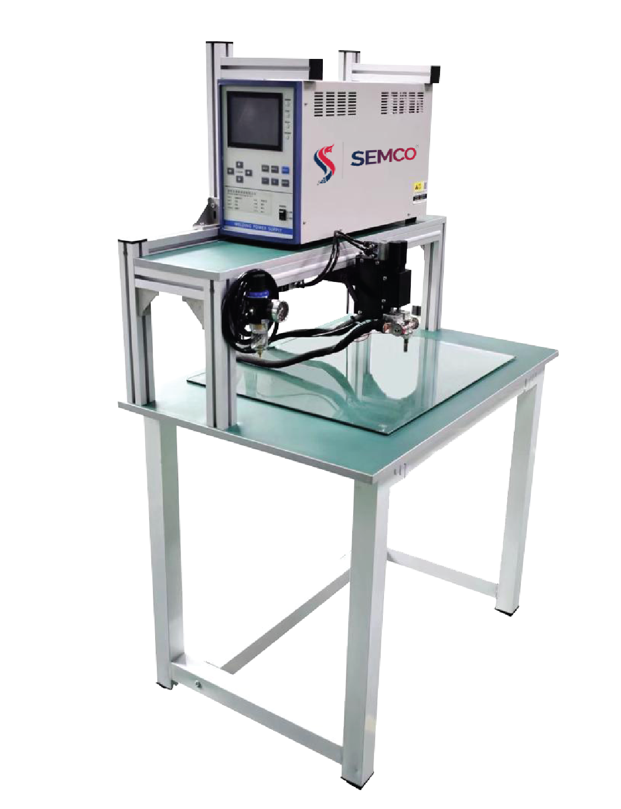
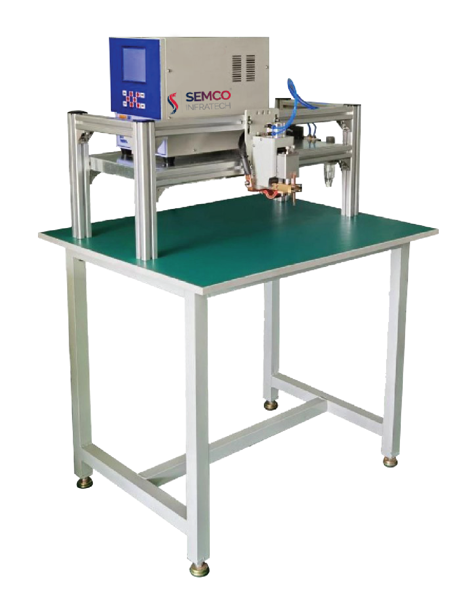
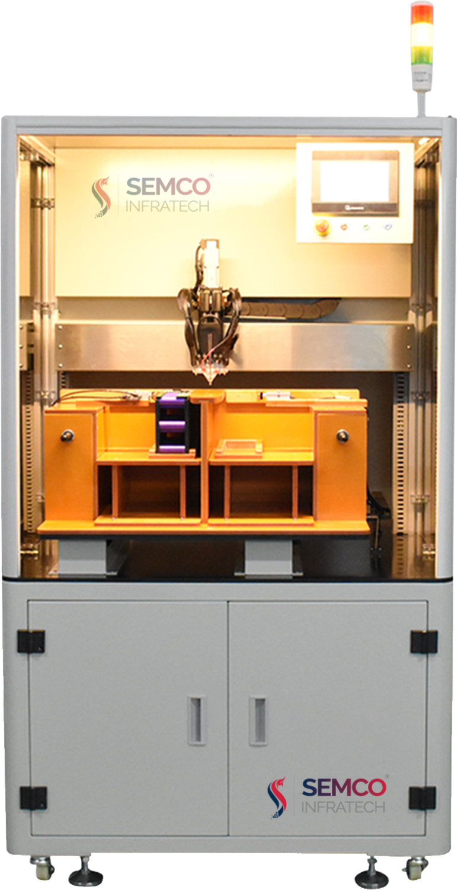
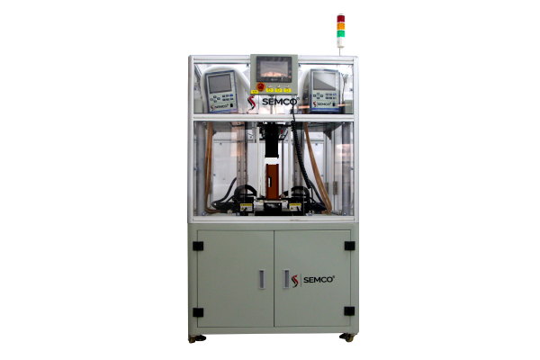

Introduction
Welding is a commonly used method in the battery pack process for welding battery cells and busbars, connecting battery tabs and parallel conductive bars, and more. This process is relatively mature and has the advantage of being simple, cost-effective, and widely used in the battery industry. The welding machine requires no additional welding materials and has simple operation and easy mechanization, making it ideal for various applications.
However, the welding machine is not without limitations. It is restricted by high power consumption, electrode rod replacement, conductivity of the welded material, applicable joint form, and weldable workpiece thickness (or cross-sectional size).
The battery pack spot welding machine, which is commonly used for battery pack spot welding, works on the principle of battery welding. In this method, the battery and the nickel strip are clamped between electrodes with a certain force, and then the nickel strip is melted by the heat generated by the current flowing through it. A reliable welding point is formed after cooling.
Principles Of the Spot-welding machine
The working principle of the spot welding machine involves pressing the battery and the nickel strip tightly through electrodes and applying a certain connection pressure. The welding power source then releases a larger current in the welding zone for a specific time until the nickel sheet and the battery come into actual contact with each other. The welding current is then increased to continue the growth of the nugget. The atoms at the contact position of the nickel strip are activated to form a molten core, and finally, the melted nickel strip is condensed into a welding point. This method uses the heating effect generated by the current flowing through the contact surface of the nickel strip and the adjacent area to heat the nickel strip to a molten state to form a metal bond.
Spot welding is a widely used process in the manufacturing industry that involves joining two metal surfaces by applying heat and pressure through an electric current. The process is efficient, cost-effective, and produces high-quality welds. To achieve this, manufacturers use a spot-welding machine, which is designed to perform the spot-welding process accurately and effectively.
But,
Why Spot-Welding Machines are required?
Spot welding machines are commonly used in the battery manufacturing industry for various applications. Among them is Battery Pack Assembly as spot welding machines are used to assemble battery packs by joining individual cells together. The process ensures that the welds are strong, uniform, and consistent, ensuring the overall durability and performance of the battery. Second for Electrical Connections where Spot welding machines are used to create electrical connections between the battery cells and other components. The process ensures that the connections are secure, reliable, and free of defects, ensuring that the battery can deliver power efficiently. Overall, spot welding machines are essential in the battery manufacturing industry due to their efficiency, cost-effectiveness, high-quality welds, and ability to create reliable electrical connections. They are a crucial tool that enables manufacturers to assemble high-performance batteries that can deliver power efficiently.
After understanding the requirements, you might be thinking what are its benefit then below information will help you,
A spot-welding machine offers several benefits for a battery plant. A spot-welding machine can deliver precise and consistent welds, ensuring that the battery cells are joined accurately and securely. This precision welding helps to minimize defects, which can affect the battery's performance and longevity. Secondarily, Spot welding machines are designed to work quickly and efficiently, reducing the time required for welding and increasing the overall productivity of the battery plant. This increased productivity can help to reduce manufacturing costs and improve production efficiency.
One possible thought that might be encompassing your brain, what is the difference between a normal welding machine and a spot-welding machine? as both can weld the joints effectively. but the logic behind this is the power supply. Do you know what type of welding power supply is used for spot welding machine. Read the below para and know about the types of power supply in the spot-welding machine.
There are several types of welding power supplies used for spot welding, including:
Capacitor discharge (CD) welding power supply: This type of power supply uses a capacitor to store electrical energy, which is then released to create a high-energy weld. CD welding is useful for welding thin materials, as it produces a short burst of energy.
Resistance welding power supply: This type of power supply uses electrical resistance to create heat and melt the metals being welded. Resistance welding is useful for welding thicker materials and produces a longer-lasting weld than CD welding.
AC welding power supply: This type of power supply uses alternating current (AC) to create the welding heat. AC welding is typically used for larger, thicker materials.
Inverter welding power supply: This type of power supply uses high-frequency switching to convert DC power to AC power, which is then used to create the welding heat. Inverter welding is useful for welding a variety of materials and is known for its energy efficiency.
High Frequency Inverter supply: They support constant current, voltage, or power operation, with time control programmable in 1 ms or 0.01 ms increments. Due to their high repetition rates, they are often used in automated applications.
Overall, the choice of welding power supply will depend on the materials being welded, the thickness of those materials, and the desired strength and durability of the weld.
Now, you must be saying that the machine is awesome I should buy one for my plant but which brand to trust as there are multiple brands in the market. Then do not worry we have the right solution from a three-decade old production house that supplies the perfect solution for welding batteries.
Semco
Semco is a leader in supplying lithium-ion battery testing and assembly equipment. It has enthralled its customers with various customized solutions. One such product that Semco offers is the Welding Machine that comes in different customized formats such as Semco Transistor Welding Power supply, Semco Gantry transistor Spot-welding Machine, Semco Single side Automatic Spot-Welding Machine, Semco Double side Automatic Spot-Welding Machine, and Semco Laser Welding Machine. Talking about these highly automated and customized machines here are some key features.
Semco Transistor Welding Power supply
The Semco Transistor Welding Power Supply is a highly efficient and advanced welding technology that offers a range of benefits. With options like SEMCO SI MWN 5000A/8000A/10000A, it is designed to deliver high-quality welding in a short time. Its welding current, voltage, and power resistance are highly effective, and its small and lightweight welding transformer makes it easy to work with. The transistor welding control system is fast and highly accurate, making it suitable for welding strong metals such as copper, pure nickel, brass, and other metals. Overall, the Semco Transistor Welding Power Supply is a top-of-the-line technology that is highly recommended for welding applications.

Semco Gantry transistor Spot-welding Machine
Semco Gantry transistor spot welding machines are state-of-the-art machines that come in various ranges, including SEMCO SI MWN 4000A/6000A/9000A. These machines have several features that make them stand out in the market. They have microcomputer control keyboard adjustment, which enables users to set parameters accurately and conveniently. The machines also display the setting parameters with a large LCD, making it easy for users to monitor the welding process. Additionally, the machines have double needles, an alarm function, automatic inspection, and improved welding quality. The welding spark is small, and the welding time is short, making the machines ideal for welding various materials. Overall, Semco Gantry transistor spot welding machines are reliable, efficient, and user-friendly.

Find the video to have more insight into the working of Gantry Transistor Spot Welding
Semco Single side Automatic Spot-Welding Machine
Semco single side Automatic spot-welding machine is a high-performance machine that comes in various ranges, including SEMCO SI SSWM 3X 5000A/8000A/10000A. The machine has several features that make it ideal for continuous automatic spot-welding operations. It can perform single or double-station non-stop welding operations, enabling users to improve productivity. The machine also has an automatic welding current monitoring and alarm function, ensuring safety during the welding process. Additionally, the rotating welding can spot weld nickel plates with different angles, making it versatile for various welding tasks. The anti-sticking needle function can be turned on and off by rotating the welding needle, which further improves the machine's flexibility. Moreover, the machine has SERVO MOTOR CONTROL/PNEUMATIC, which provides precise control and stability during the welding process. Overall, Semco single side Automatic spot-welding machine is a reliable and efficient machine that is ideal for continuous automatic welding operations.

Semco Double side Automatic Spot-Welding Machine
Semco double-side automatic spot-welding machine is a high-end machine that comes in various ranges, including SEMCO SI SSWM 6X/8X 5000A/8000A/10000A. The machine has numerous features that make it ideal for various welding tasks. It has a full touch screen human-machine interface Y, Z axis servo drive, which provides flexible control during the welding process. The machine also has a flexible servo motor drive of spot-welding head, ensuring precise and stable welding. Additionally, the universal 6-axis CNC system is adopted to make the control more standardized, enabling users to set parameters accurately and conveniently. The machine has an automatic alarm for bad solder joints and manual control for automatic positioning and repair welding, ensuring high welding quality. Overall, Semco double-side automatic spot-welding machine is a reliable and efficient machine that is ideal for various welding tasks.

Find the video to have more insight into the working of Double sided automatic spot welding machine
Semco Laser Welding Machine
Semco Laser welding machine is a cutting-edge machine that comes in various ranges, including SEMCO SI LW 1000/1500/2000/3000/4000/6000W. The machine uses laser technology to perform welding tasks, providing high precision and speed. The machine comes with a conveyor system that enables continuous and automated welding operations, enhancing productivity. The machine also has an alarm function and automatic inspection, ensuring safety and high-quality welding. The automatic inspection function enables the machine to detect and correct errors during the welding process, minimizing defects in the final product. Overall, Semco Laser welding machine is a reliable and efficient machine that is ideal for various industrial applications that require high precision and speed.

Got the solution to your welding worries then what are you waiting for book a live demo and operate your battery plant without any hassles and tensions. If you liked our newsletter then do not forget to share and comment. If you are looking to make career in battery technology stay tuned for our next Newsletter on “Laser Welding Machine”. Till then “Happy Batteries”.